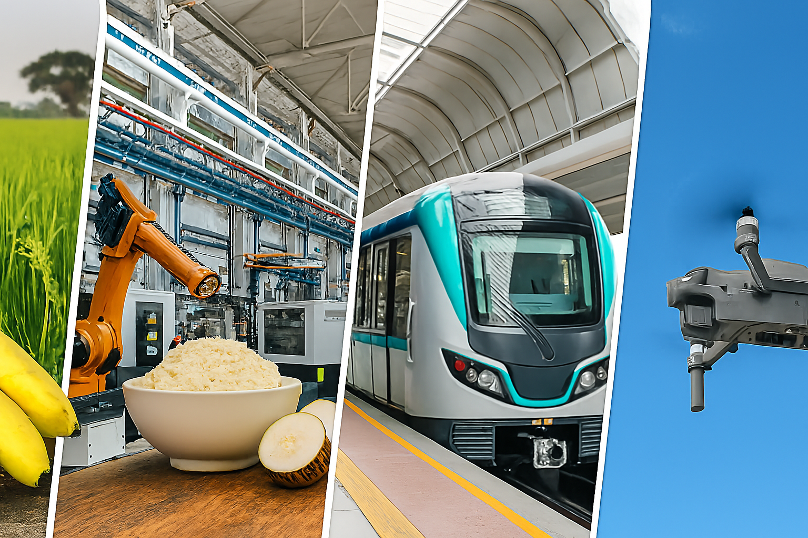

Lancement officiel des activités du MAC
Les idées sont en cours d'étude !
20 Novembre 2025

Mobiliser la jeunesse ivoirienne pour un développement durable et tourné vers l’innovation
Une jeunesse ivoirienne consciente, active et tournée vers le progrès technologique et durable.

Nous soutenons les projets d’industrialisation locale, de transformation agricole et d’innovation technique.
Les idées sont en cours d'étude !
20 Novembre 2025
Nos équipes travaillent sur des solutions concrètes pour la Côte d'Ivoire.
01 Décembre 2025